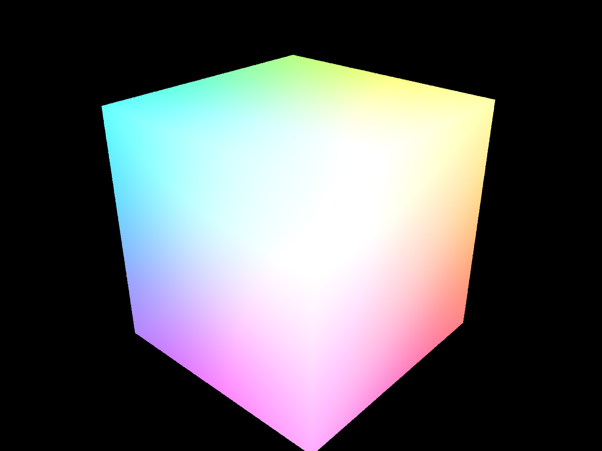
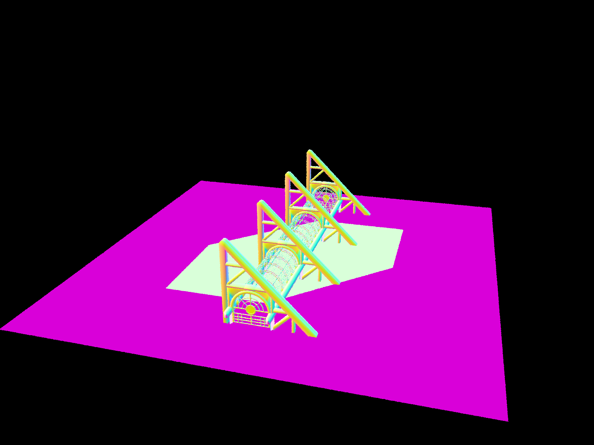
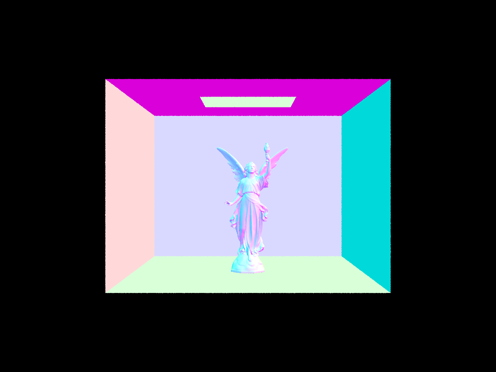

In this project I first implemented some utility functions about rays, rigid body transformation, pixel sampling, and ray intersection with triangle and sphere. Then I implemented Bounding Volume Hierarchy, a datastructure that partitions scene primitives based on spatial locations using a tree structure to speed up ray scene intersection calculation. Afterwards I implemented 0th, 1st, and mth bounce illumination, enabling scene rendering with realistic soft shadows. Finally, I implemented adaptive sampling which uses a heuristics to terminate sampling rays for a pixel early if it converges quickly. My website link is https://ZekaiWang04.github.io/cs184/hw3/.
Part 1: Ray Generation and Scene Intersection
When rendering a scene, we first sample a certain amount of rays for each pixel region, and then generate the ray in the world coordinate using the camera extrinsics (i.e. position and c2w rotation). Then, for each ray we can loop through all the objects in the scene and test for scene intersection. We use the closest of all intersections and get the object pointer, normal direction, intersection point, and brdf function, which can be used later down the pipeline. For triangle intersection, I use the Möller Trumbore Algorithm, which is just an optimized algorithm that solves for the barycentric coordinates of the intersection point: let \(P_0, P_1, P_2 \in \mathbb{R}^3\) be the vertices of the triangle, any point on the triangle can be expressed in barycentric coordinates \(b_0 P_0 + b_1 P_1 + b_2 P_2\) subject to \(b_0 + b_1 + b_2 = 1, b_0 \geq 0, b_1 \geq 0, b_2 \geq 0\). Also any point on the ray can be expressed by \(o + td\), solving \(o + td = (1 - b_1 - b_2) P_0 + b_1 P_1 + b_2 P_2\) yields the formula. See below for a few visualizations. Note that for larger scenes (e.g. Building), it took a long time (a few minutes on a m1 mac) to render.

CubeSphereBanana

Building
Part 2: Bounding Volume Hierarchy
To reduce the computational complexity of rendering a scene from the vanilla \(\mathcal{O}(N)\) to \(\mathcal{O}(\log(N))\) where \(N\) is the number of primitives in the scene, we can use Bounding Volume Hierarchy, which is a binary tree that partitions all the primitives based on their spatial location. This speeds up computing intersection between rays and the scene.
For BVH construction, I use the median heuristics (i.e. choosing the axis with the largest range and split on the median primitive bounding box centeroid location) to make the binary tree balanced. At each node, I recursively construct the BVH tree (constructing the overall bounding box, split primitives into left and right, and construct the left and right node) until the number of primitives in the node is less than a prespecified threshold. For a leaf node, I store the primitive pointers and the bounding box of the node. Below are a few rendered complex scenes.
CowMax PlankDragon

CB Lucy
I benchmarked the speedup of BVH in a m1 Pro macbook, and I render with 8 threads and resolution \(800 \times 600\), with all other parameters the same as default. The table below contaisn the render time of several scenes with and without BVH acceleration, as well as the number of primitives in the scenes. We observe that reder time without BVH scales approximately linearly with the number of primitives, while with BVH acceleration the render is much shorter and scales approximately logarithmically. In fact, the render time with BVH is so short that difference between trials is not negligible, causing a more noisy result.
Scene
Render Time (Vanilla)
Render Time (BVH)
Number of Primitives
Cow
4.0933 s
0.0289 s
5,856
Building
25.8061 s
0.0194 s
39,506
Max Plank
40.2108 s
0.0372 s
50,801
Dragon
116.9658 s
0.0376 s
105,120
CB Lucy
189.8965 s
0.0304 s
133,796
Part 3: Direct Illumination
The diffuse BSDF function is isotropic: it is just the reflectance divided by \(\pi\), and zero-bounce illumination is trivially the emitted radiance of the light source.
For one-bounce illumination, recall the reflection equation \(L_r(p, \omega_r) = \int_{H^2} f_r(p, \omega_i \to \omega_r) L_i(p, \omega_i) \cos(\theta_i) d\omega_i\). The direct lighting with uniform hemisphere sampling function uses a Monte Carlo sampling \(\omega_i \sim \textrm{Uniform}(H^2)\) that uniformly samples the incident solid angle within the local hemisphere. We can simply use \(\frac{1}{N} \sum_{j=1}^N \frac{f_r(p, \omega^{(j)}_i \to \omega_r) L_i(p, \omega^{(j)}_i) \cos(\theta_i)}{p(\omega^{(j)}_i)}, p(\omega^{(j)}_i) = \frac{1}{2\pi}\) to estimate the integral, where \(L_i(p, \omega^{(j)}_i)\) is just the emitted radiance of the place where the incident ray intersects the scene. The direct lighting by importance sampling lights uses importance sampling to reduce the noise of the Monte Carlo integral estimator. Specifically, \(\omega_i\) is sampled through a hierarchical approach by first uniformly sampling a light source and then sample within the light source. For each sampled \(\omega^{(i)}_j\), we draw a shadow ray from the intersection point to the light source and check if the ray intersects any other objects in the scene, and we can still use the Monte Carlo estimator to estimate the integral, though \(p(\omega^{(j)}_i)\) will be different.
Below are some scenes rendered through direct lightning with uniform hemisphere sampling. Note that the dragon scene is entirely black because there is only one point light source, which we have a zero probability of sampling a ray that passes through it.
Below are the same scenes rendered through direct lightning with importance sampling lights. Note that the dragon scene is now visible because we are able to sample the point light source.
Comparing the two sampling methods, we observe that the uniform hemisphere sampling method is much noisier than the importance sampling lights method. This is because the uniform hemisphere sampling method samples rays uniformly in the hemisphere, which means that it is very unlikely to sample a ray that passes through the light source, while the importance sampling lights method samples rays based on the light source distribution, which means that it is guaranteed to sample a ray that passes through the light source even though the shadow ray might be blocked by other primitives in the scene.
For the bunny scene, I also compare the effect of different numbers of samples per area light's effect on the rendered scene while fixiing the number of camera rays per pixel to 1 and using light sampling. See below for the results. Since the bunny scene has a area light source, as we sample more rays per area light, we can see that the rendered scene is less noisy, especially for the soft shadow areas because they are rendered through one-bounce illumination. This is because the variance for a Monte Carlo estimator decreases as we sample more rays.
Bunny, 1 sample per area lightBunny, 4 samples per area lightBunny, 16 samples per area lightBunny, 64 samples per area light
Part 4: Global Illumination
For indirect illumination, I recursively evaulate the reflection equation \(L_r(p, \omega_r) = \int_{H^2} f_r(p, \omega_i \to \omega_r) L_i(p, \omega_i) \cos(\theta_i) d\omega_i\) using where \(L_i(p, \omega_i) = L_r'\) by sampling an incident ray. Thus, I can trace the path of the light and estimate at least one bounce illumination. At each time we reduce the depth of the ray, and if the depth of the ray becomes one I just simply return the one bounce illumination. Below are some scenes rendered through global illumination with 1024 rays per pixel. We can see that the quality is much better than direct illumination only.
BenchBunnySphere
Below are the comparison of the scenes rendered with only direct illumination (zero and one bounce) and only indirect illumination (at least two bounces). Usually indirect illumination supplements the details and shadows of the scene. The bench scene's indirect illumination is very dark because there isn't a wall like the cornell box for the other two scenes that reflects the light back to the scene, so the only indirect illumination are caused by the self reflections of the bench, which is small in magnitude.
Bench, direct illuminationBench, indirect illuminationBunny, direct illuminationBunny, indirect illuminationSphere, direct illuminationSphere, indirect illumination
For the bunny scene, below are the rendered views of accumulated and unaccumulated bounces with max depth ranging from 0 to 5. For the 2nd and 3rd bounce of light, they provide detail of the scene and make the scene much more realistic (especially for soft shadows and area not directly hit by light from the light source) compared to only 0th (direct illumination from light source) and 1st (similar to rasterization in the sense that shapes boundaries are obvious and seem not lively) bounce. As we can see in the accumulated versions, as max depth of rays increases the scene becomes more detailed in shading and more realistic.
Bunny, accumulated bounces, max depth = 0Bunny, accumulated bounces, max depth = 1Bunny, accumulated bounces, max depth = 2Bunny, accumulated bounces, max depth = 3Bunny, accumulated bounces, max depth = 4Bunny, accumulated bounces, max depth = 5Bunny, unaccumulated bounces, max depth = 0Bunny, unaccumulated bounces, max depth = 1Bunny, unaccumulated bounces, max depth = 2Bunny, unaccumulated bounces, max depth = 3Bunny, unaccumulated bounces, max depth = 4Bunny, unaccumulated bounces, max depth = 5
Russian Roulette is a way to terminate rays for efficiency and computational tractability while maintaining an unbiased estimate for the global illumination, which is a infinite summation of m-bounce illumination. To do so, at each recursive step, we terminate the ray with a certain probability and use the probability to inversly multiply the original estimate so that our estimate is still unbiased. Below is the bunny scene rendered with Russian Roulette with \(p_rr = 0.4\) where \(p_rr\) is the per-step termination probability and with different max ray depths. We can see that the scenes are similar to the ones above without using Russian Roulette. In addition, Russian Roulette makes setting a large max depth possible since most rays will be terminated early on, and the scene with max depth equals 100 is slightly of higher quality than the others.
Bunny, Russian Roulette, max depth = 0Bunny, Russian Roulette, max depth = 1Bunny, Russian Roulette, max depth = 2Bunny, Russian Roulette, max depth = 3Bunny, Russian Roulette, max depth = 4Bunny, Russian Roulette, max depth = 100
Finally, below are the sphere scene rendered with 4 light rays and 1, 2, 4, 8, 16, 64, 1024, and 4096 samples per pixel. We can see that when the sample-per-pixel rate is small the rendered scene is extremely noisy, but as the sample-per-pixel rate increases the rendered scene becomes less noisy and more realistic.
1 sample rays per pixel2 sample rays per pixel4 sample rays per pixel8 sample rays per pixel16 sample rays per pixel64 sample rays per pixel1024 sample rays per pixel4096 sample rays per pixel
Part 5: Adaptive Sampling
For each pixel, originally we naively sample a fixed amount of rays and fill the buffer with the average of these rays. However, this is not efficient because for some pixels, the rays converge quickly and we don't need to sample as many rays. We thus keep track of the mean \(\mu\) and standard deviation \(\sigma\) for the rays sampled so far. At each batch end (batch size is 32), we check if \(1.96 \cdot \frac{\sigma}{\sqrt{n}} < \text{tol } \cdot \mu\), a threshold for convergence based on z-statistics. If the condition is satisfied, we terminate the sampling process early and fill in the buffer with the mean of the rays sampled so far. Below are the rendered scenes and the number of rays sampled per pixel for the bunny and sphere scene. We observe that different regions have drastically different number of rays sampled per pixel before convergence, and regions in soft shadows (i.e. not directly exposed to light source) requires the most number of samples to converge (hence presumably the most noisy or hardest to render).
BunnyBunny, number of rays sampled per pixelSphereSphere, number of rays sampled per pixel